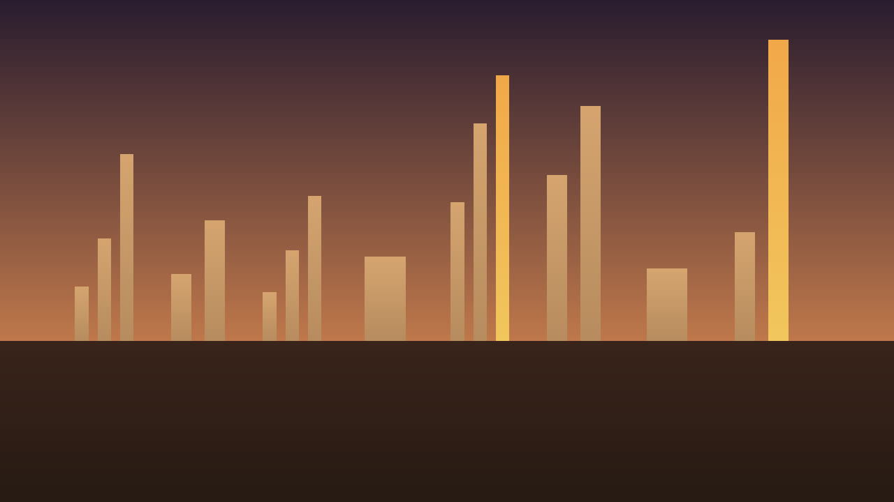

Eight 8-bar motifs · pocket, answer, space
Second Sixteenth

melody velocity 96 and up keys reference bass reference Bar height follows velocity. Gaps are rests.
Reading the MIDI.
Melody is the core, monophonic, MIDI 55 to 86. Keys references use MIDI 40 to 76, at most four notes at once, and are not core. Bass references are monophonic, MIDI 28 to 52, and are not core.
Eight bars for every study. Sixteen bars at 70-95 BPM lasts about 40.4 seconds or longer. Note-only MIDI. Pocket is the written grid. Offsets are 0. Random jitter, tape dust, and noise are not notes.
File contract
Set map
- s01 Second Sixteenth: s01.melody.a, s01.keys.a, s01.bass.a, s01.melody.b, s01.keys.b, s01.bass.b
- s02 And of Two: s02.melody.a, s02.keys.a, s02.bass.a, s02.melody.b, s02.keys.b, s02.bass.b
- s03 Held Answer: s03.melody.a, s03.keys.a, s03.bass.a, s03.melody.b, s03.keys.b, s03.bass.b
- s04 Fifth Then Rest: s04.melody.a, s04.keys.a, s04.bass.a, s04.melody.b, s04.keys.b, s04.bass.b
- s05 Question Rest: s05.melody.a, s05.keys.a, s05.bass.a, s05.melody.b, s05.keys.b, s05.bass.b
- s06 Step and Leap: s06.melody.a, s06.keys.a, s06.bass.a, s06.melody.b, s06.keys.b, s06.bass.b
- s07 Soft Cadence: s07.melody.a, s07.keys.a, s07.bass.a, s07.melody.b, s07.keys.b, s07.bass.b
- s08 Open Space: s08.melody.a, s08.keys.a, s08.bass.a, s08.melody.b, s08.keys.b, s08.bass.b
Use either the combined arrangement or the separate parts. Do not stack the part files on top of the combined file.
Files
| Part | Role | Var | Count | BPM | Notes |
|---|---|---|---|---|---|
| s01.melody.a | melody | a | core | 78 | 18 |
| s01.keys.a | keys-reference | a | keys reference | 78 | 12 |
| s01.bass.a | bass-reference | a | bass reference | 78 | 16 |
| s01.melody.b | melody | b | core | 78 | 19 |
| s01.keys.b | keys-reference | b | keys reference | 78 | 24 |
| s01.bass.b | bass-reference | b | bass reference | 78 | 16 |
| s02.melody.a | melody | a | core | 84 | 19 |
| s02.keys.a | keys-reference | a | keys reference | 84 | 16 |
| s02.bass.a | bass-reference | a | bass reference | 84 | 16 |
| s02.melody.b | melody | b | core | 84 | 20 |
| s02.keys.b | keys-reference | b | keys reference | 84 | 24 |
| s02.bass.b | bass-reference | b | bass reference | 84 | 16 |
| s03.melody.a | melody | a | core | 72 | 17 |
| s03.keys.a | keys-reference | a | keys reference | 72 | 16 |
| s03.bass.a | bass-reference | a | bass reference | 72 | 16 |
| s03.melody.b | melody | b | core | 72 | 21 |
| s03.keys.b | keys-reference | b | keys reference | 72 | 24 |
| s03.bass.b | bass-reference | b | bass reference | 72 | 16 |
| s04.melody.a | melody | a | core | 90 | 19 |
| s04.keys.a | keys-reference | a | keys reference | 90 | 16 |
| s04.bass.a | bass-reference | a | bass reference | 90 | 16 |
| s04.melody.b | melody | b | core | 90 | 21 |
| s04.keys.b | keys-reference | b | keys reference | 90 | 24 |
| s04.bass.b | bass-reference | b | bass reference | 90 | 16 |
| s05.melody.a | melody | a | core | 76 | 18 |
| s05.keys.a | keys-reference | a | keys reference | 76 | 16 |
| s05.bass.a | bass-reference | a | bass reference | 76 | 16 |
| s05.melody.b | melody | b | core | 76 | 23 |
| s05.keys.b | keys-reference | b | keys reference | 76 | 24 |
| s05.bass.b | bass-reference | b | bass reference | 76 | 16 |
| s06.melody.a | melody | a | core | 86 | 21 |
| s06.keys.a | keys-reference | a | keys reference | 86 | 16 |
| s06.bass.a | bass-reference | a | bass reference | 86 | 16 |
| s06.melody.b | melody | b | core | 86 | 21 |
| s06.keys.b | keys-reference | b | keys reference | 86 | 24 |
| s06.bass.b | bass-reference | b | bass reference | 86 | 16 |
| s07.melody.a | melody | a | core | 70 | 15 |
| s07.keys.a | keys-reference | a | keys reference | 70 | 16 |
| s07.bass.a | bass-reference | a | bass reference | 70 | 16 |
| s07.melody.b | melody | b | core | 70 | 23 |
| s07.keys.b | keys-reference | b | keys reference | 70 | 24 |
| s07.bass.b | bass-reference | b | bass reference | 70 | 16 |
| s08.melody.a | melody | a | core | 94 | 18 |
| s08.keys.a | keys-reference | a | keys reference | 94 | 16 |
| s08.bass.a | bass-reference | a | bass reference | 94 | 16 |
| s08.melody.b | melody | b | core | 94 | 21 |
| s08.keys.b | keys-reference | b | keys reference | 94 | 24 |
| s08.bass.b | bass-reference | b | bass reference | 94 | 16 |
Recorded reading · study 01 variation A, all 8 bars
This MP3 is 24.62 seconds. preview, not a master. The film is 24.62 seconds and shows preview, not master.
No program changes are encoded. A conventional GM player will normally use its default piano program for pitched channels unless configured otherwise; compatible GM channel 10 percussion is treated separately. Player behavior may vary.
No human listening audition was performed for this build.
The GitHub repository is https://github.com/mizcausevic-dev/chillhop-melodies and it is public. The catalog page is https://mizcausevic-dev.github.io/chillhop-melodies/ .